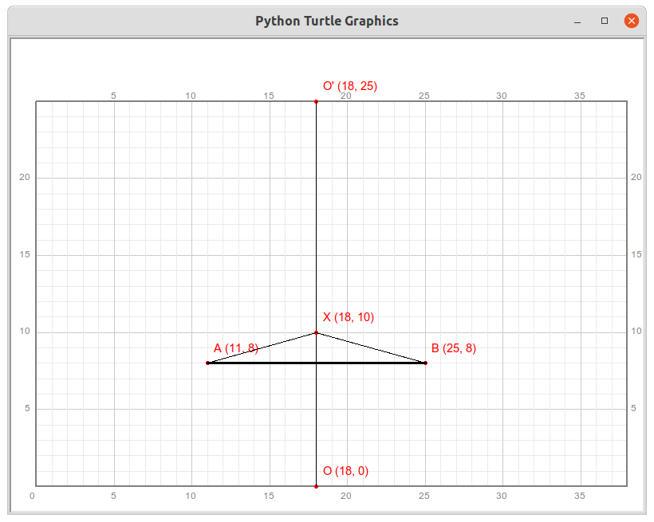
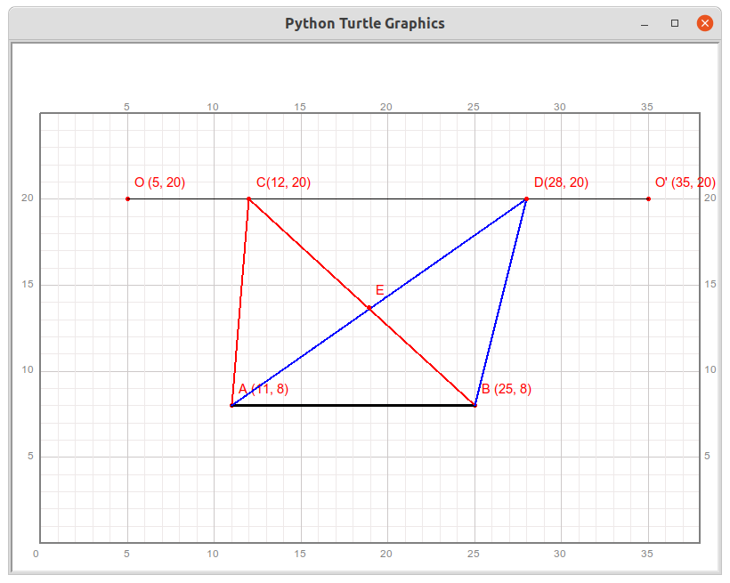
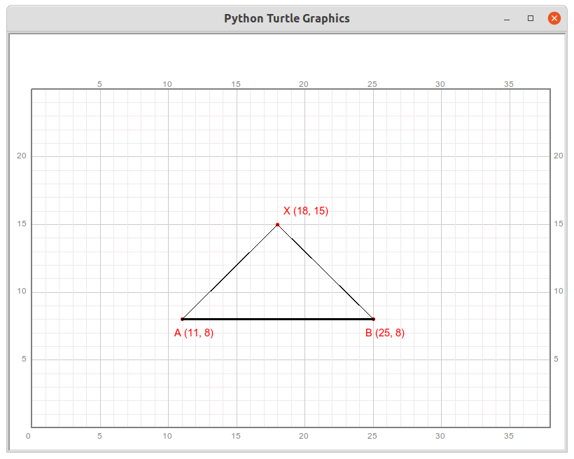

第24讲 三角形和它的面积¶
Lecture 24. Triangle and its area
Problem 问题描述¶
qianglib, draw a grid coordinate system where the origin (0, 0) is at the bottom left of the coordinate system.qianglib库提供的方法，绘制方格坐标纸，其中坐标系的原点(0,0)位于绘图区的最左下方，使用的scale值为20.Follow the steps below，draw a graph slimilar to the picture below. 跟随下面的步骤，绘制出类似如下图所示的图形。

Given the coordinates of the points ABC as A(5, 15), B(13, 15), C(7, 19), connect ABC in order to create a triangle. Draw this triangle use black color and line width of 3. mark every vertex with letters A,B, and C; mark the line AB with letter “b”; mark the triangle with “T1”. Give proper size to the markers. 给定三个点及其坐标A(5, 15), B(13, 15), C(7, 19)，依次连接ABC可以得到一个三角形。使用黑色、线宽为3，绘制这个三角形，用字母ABC分别标记每一个顶点，给线段AB一个标记“b”，给这个三角形一个标记“T1”。注意适当调整标记文字的大小。
Find a point E on line segment AB such that the x value of point E is the same as that of point C. Mark the point E, draw the line segment CE, and add the mark “h” to the line segment CE. 在线段AB上找到一个点E，使得点E的横坐标与点C的横坐标相同。标记点E，绘制线段CE，并给线段CE添加标记“h”。
Find a point D on the upper right of line segment BC, connect BD and CD so that BD is parallel to AC, and CD is parallel to AB. BDC forms another triangle. Draw this triangle using blue color with a line width of 3. Mark point D, and give the line segment CD a mark “b”, mark the triangle as “T2”. Give proper size to the markers. 在线段BC的右上方找到一个点D，连接BD和CD，使得BD与AC平行，CD与AB平行。BDC形成另一个三角形。使用蓝色，线宽为3绘制这个三角形。标记D点，并给线段CD一个标记“b”，给这个三角形标记“T2”，注意适当调整标记文字的大小。
A quadrilateral ABDC with A, B, D, and C as vertices is a parallelogram. Move each vertex of this quadrilateral horizontally to the right by 18 unit lengths to obtain points A’, B’, D’, and C’. A’B’D’C’ form a new parallelogram. Use black color with a line width of 3 to draw this new parallelogram. Label each vertex separately: “A’”, “B’”, “D’”, “C’”, and label segments A’B’ and D’C’ with “b”. Similarly, move point E the same distance to the right to get point E’, draw line segment C’E’, and mark “h” on its left side. Label this parallelogram as “P1”. 以A,B,D,C为顶点的四边形ABDC是一个平行四边形，将这个四边形的每一个顶点水平向右移动18个单位长度，得到点A’, B’, D’, C’。A’B’D’C’形成一个新的平行四边形。使用黑色，线宽为3来绘制这个新平行四边形。给每一个顶点分别标记：“A’”, “B’”, “D’”, “C’”，给线段A’B’和D’C’标记“b”。类似的把点E也向右平移相同的距离，得到点E’,绘制线段C’E’，并在其左侧标记“h”。给这个平行四边形标记“P1”。
At the previous lecture, we already know that each parallelogram corresponds to a rectangle. Please draw the corresponding rectangle at the appropriate position (decide by yourself) under the new parallelogram. Label the vertices, edges, and the rectangle itself accordingly. 通过上一节课，我们已经知道，每一个平行四边形都对应一个矩形，请在新的平行四边形下方适当的位置（自己决定）绘制这个对应的矩形。给顶点、边和矩形本身做好相应的标记。
Consider the relationship between the area of triangle T1 and the area of parallelogram P1. Write a method to calculate the area of a triangle whose one side is parallel to the x axis, and call this method to calculate the area of triangle T1. 思考三角形T1的面积和平行四边形P1的面积的关系，编写一个方法计算一个边平行于x轴的三角形的面积，并调用这个方法计算三角形T1的面积。
Math Background 数学背景¶
三个不在同一条直线上的点可以组成一个三角形；三角形有三条边；
两个完全一样的三角形可以拼接成一个平行四边形；
有一个角是直角的三角形为直角三角形，两个完全一样的直角三角形可以凭借成一个矩形；
三角形的面积是对应的拼接得到的平行四边形的一半；
三角形的面积公式：\(S=\frac{1}{2}\cdot b\cdot h\)，其中\(b\)为一个底边的长，\(h\)为对应的高度。
Prerequisites 预备知识¶
Translation 平移
[1]:
from turtle import setup, reset, pu, pd, bye, left, right, fd, bk, screensize
from turtle import goto, seth, write, ht, st, home, dot, pen, speed
from qianglib import prepare_paper, draw_grid, mark, lines, line, polygon, text
from qianglib import get_center
[2]:
width, height = 800, 600
setup(width, height, 0, 0)
prepare_paper(width, height, scale=20, min_x=0, min_y=0, max_y=25)
[ ]:
P1 = (12, 8)
mark(P1, info="P1"+str(P1), color="blue", offset=(0, -2))
[ ]:
# move P1 right -> 15, up -> 12.
# 移动 P1 向右 15个单位， 向上 12 个单位
P2 = (P1[0]+15, P1[1]+12)
mark(P2, info="P2"+str(P2), color="red")
[ ]:
# right 8, up -> 6
P3 = (P1[0]+8, P1[1]+12)
mark(P3, "P3"+str(P3))
[ ]:
def move(point, right, up):
new_point = (point[0]+right, point[1]+up)
return new_point
[ ]:
# P4 right 4, up 10
P4 = move(P1, 4, 10)
print(P4)
mark(P4, "P4"+str(P4), offset=(-3, 0))
[ ]:
def translate(shape, offset=(0, 0)):
new_shape = None
if type(shape) == tuple:
new_shape = shape[0]+offset[0], shape[1]+offset[1]
elif type(shape) == list:
new_shape = []
for point in shape:
new_point = translate(point, offset)
new_shape.append(new_point)
else:
pass
return new_shape
[ ]:
P5 = translate(P1, (3, 5))
[ ]:
P6 = translate(P5, (0, 1))
[ ]:
P7 = translate(P6, (0, 0))
[ ]:
P8 = translate(P2, (-4, -2))
[ ]:
polygon1 = [P1, P2, P3, P4]
polygon(polygon1)
[ ]:
# right = 8, down = 7
offset = (8, -7)
polygon2 = []
for point in polygon1:
new_point = translate(point, offset)
polygon2.append(new_point)
polygon(polygon2, color="red", line_width=5)
[ ]:
polygon3 = translate(polygon1, (-10, 2))
print(polygon3)
[ ]:
polygon(polygon3, color="blue")
Exercise 练习¶
[ ]:
Solution 编程求解¶
[ ]:
from turtle import setup, reset, pu, pd, bye, left, right, fd, bk, screensize
from turtle import goto, seth, write, ht, st, home, dot, pen, speed
from qianglib import prepare_paper, draw_grid, mark, lines, line, polygon, text
from qianglib import get_center
[ ]:
width, height = 800, 600
setup(width, height, 0, 0)
prepare_paper(width, height, scale=20, min_x=0, min_y=0, max_y=25)
[ ]:
def translate(shape, offset):
'''move a shape certain distance defined by offset
params:
shape: a point, line, or a polygon;
data type: tuple or list of tuple
example: (2, 4), [(1, 2), (3, 5)], [(1, 2), (3, 5), (5, 6)]
offset: distance
data type: tuple (dx, dy)
example: (9, 9)
return a tuple or list of tuple representing a point, or a line, polygon.
'''
new_shape = None
if type(shape) == tuple: # a point
new_shape = shape[0]+offset[0], shape[1]+offset[1]
elif type(shape) == list: # a line or a polygon
new_shape = []
for point in shape:
new_point = point[0] + offset[0], point[1]+offset[1]
new_shape.append(new_point)
else:
pass
return new_shape
[ ]:
A, B, C = (5, 15), (13, 15), (7, 19)
triangle1 = [A, B, C]
polygon(triangle1, color="black", line_width=3,
side_texts=["b"],
marker_texts = list("ABC"),
marker_offsets = [(0, -1), (0, -1), (0, 0)],
center_text = "T1",
center_text_offset = (0, -0.5),
center_text_font = ("Arial", 10, "italic")
)
E = (C[0], A[1])
mark(E, "E", offset=(0,-1))
line(C, E, color="red", line_width=2)
text(translate(get_center([C, E]), (-0.5, -0.5)), "h",
font=("Arial", 10, "italic"))
[ ]:
D = translate(C, (8, 0))
triangle2 = [B, D, C]
polygon(triangle2, color="blue", line_width=3,
marker_texts = list("BDC"),
marker_offsets=[(0,-1), (0, 0), (0, 0)],
center_text = "T2",
center_text_color = "blue",
side_texts=[None, "b"],
side_text_offsets=[None, (0,0)],
center_text_font = ("Arial", 10, "italic")
)
[ ]:
offset = (18, 0)
parallelogram1 = translate([A, B, D, C], offset)
#Ap, Bp = translate(A, offset), translate(B, offset)
#Cp, Dp = translate(C, offset), translate(D, offset)
#parallelogram1 = [Ap, Bp, Dp, Cp]
polygon(parallelogram1, color="black", line_width=3,
marker_texts = ["A'", "B'", "D'", "C'"],
side_texts = ["b", None, "b"],
side_text_offsets = [(0, -1), None, (0, 0)],
marker_offsets = [(0, -1), (0, -1)],
center_text = "P1",
center_text_font = ("Arial", 10, "italic")
)
Ap, Bp, Dp, Cp = parallelogram1
Ep = (Cp[0], Ap[1])
mark(Ep, "E'", offset=(0, -1))
line(Cp, Ep, color="red", line_width=2)
text(translate(get_center([Cp, Ep]), (-0.5, -0.5)), "h",
font=("Arial", 10, "italic"))
[ ]:
offset = (20, -10)
App, Bpp = translate(A, offset), translate(B, offset)
offset = (18, -10)
Cpp, Dpp = translate(C, offset), translate(D, offset)
rectangle1 = [App, Bpp, Dpp, Cpp]
polygon(rectangle1, color="black", line_width=3,
marker_texts = ["A''", "B''", "D''", "C''"],
side_texts = ["b", "h", "b", "h"],
side_text_offsets = [(0, -1), (0.5, -0.5), (0, 0), (-0.5, -0.5)],
marker_offsets = [(0, -1), (0, -1), (0, 0), (0, 0)],
center_text = "R1",
center_text_font = ("Arial", 10, "italic")
)
line(Cpp, App, color="red", line_width=2)
text(translate(get_center([Cpp, App]), (-0.5, -0.5)), "h",
font=("Arial", 10, "italic"))
Summary 知识点小结¶
学习平移的数学表达形式
复习
type方法复习qianglib的一些方法
复习方法的返回值
计算机小知识¶
暂缺
Assignments 作业¶
In this lecture, we learned that two identical triangles can be joined together to form a parallelogram. In fact, by splicing two identical triangles(ex. T1), more than one shape of parallelogram can be formed. Only one of them was introduced in the lecture. In this assignment, please try to draw two other parallelograms that are formed by 2 identical T1. mark them properly (You may make appropriate translations for T1).在本讲课程里，我们学到两个完全一样的三角形可以拼接成一个平行四边形。事实上，拼接两个完全一样的三角形T1可以得到不止一种形状的平行四边形，本讲中得到的只是其中的一个，还可以拼出其它形状的平行四边形。请尝试绘制出另外两个平行四边形，并做好标记（可以对T1作适当的平移）。
[18]:
prepare_paper(width, height, scale=20, min_x=0, min_y=0, max_y=25)
[ ]:
A, B, C = (5, 15), (13, 15), (7, 19)
triangle1 = translate([A, B, C], (10, -5))
polygon(triangle1, color="black", line_width=3,
side_texts=["b"],
marker_texts = list("ABC"),
marker_offsets = [(0, -1), (0, -1), (0, 0)],
center_text = "T1",
center_text_offset = (0, -0.5),
center_text_font = ("Arial", 10, "italic")
)
[ ]:
# write your code here
Follow the steps to draw, and Answer the questions 按流程编程绘图并回答问题
Given two points A(11, 8) and B(25, 8), mark them, connect them to draw a line AB with black color and line width of 3. 给定两个点，分别为A(11, 8), B(25, 8)，标记这两个点，并连接这两点得到线段AB，用黑色，线宽为3绘制线段AB；
Draw another line between points O(18, 0) and O’(18,25) with black color and line width of 1; 用黑色，线宽为1连接点O(18, 0), O’(18,25)，形成线段OO’；
Randomly generate a point, X(18, 10) for example, on line OO’ by calling the method
randint， draw the line of AX and AB with black color and line width of 1. Estimate the length of AX and BX and the angle AXB with you eyes.调用randint方法在线段OO’中随机选定一个点，假定生成的点是(18, 10)，用X标记。用黑色、线宽为1连接AX, BX,得到一个三角形ABX。记录点X的坐标，用肉眼估计线段AX，BX的长度，用肉眼比较角AXB与90度角的大小关系，记在下面的表格里。By far, you should have a figure like the following: 到目前位置，你应该能够绘制得到如下图： 
Repeat the third step(C) 10 times, mark the point randomly generated with the letter: C, D, E, F, G, H, I, J, K, L. Fill the following table.重复10次上一步骤，每次随机生成的点分别标记为：C, D, E, F, G, H, I, J, K, L。并把相关结果填入表格。
Point X
Length AX
Length BX
is Angle AXB > 90?
X (18, 10)
8
8
Yes
C ( , )
D ( , )
E ( , )
F ( , )
G ( , )
H ( , )
I ( , )
J ( , )
K ( , )
L ( , )
Observe the data in the table, Do you have any findings? Write down you findins here. 观察分析填写好的表格，你能得到一些什么发现？ 用文字写下你的发现。
[ ]:
Follow the steps to draw, and Answer the questions 按流程编程绘图并回答问题
Given two points A(11, 8) and B(25, 8), mark them, connect them to draw a line AB with black color and line width of 3. 给定两个点，分别为A(11, 8), B(25, 8)，标记这两个点，并连接这两点得到线段AB，用黑色，线宽为3绘制线段AB；
Draw another line between points O(5, 20) and O’(35, 20) with black color and line width of 1; 用黑色，线宽为1连接点O(18, 0), O’(18,25)，形成线段OO’；
Randomly generate two points C and D on line OO’ by calling the method
randint， let C is left to D, draw the line of AC, BC, AD, and BD, you will find line AD and BC intersect at a point, let’s say E. Now, 1). count how many triangles are there given these points A, B, C, D, and E as verticies. 2) among these triangles, are there any triangles that have the same area? list all the scenarios that two (or more) triangles have the same area. 用方法randint在线段OO’上随机生成两个点C和D，使得C位于D的左侧。绘制线段AC,BC,AD和BD，你会发现线段AD和BC相交于一个点，命名为E。现在：1)数一数由点A,B,C,D,E作为顶点一共能够组成多少个三角形？2)在所有的这些三角形中，有没有一些三角形的面积相等，把所有面积相等的三角形一一列举出来。

[55]:
prepare_paper(width, height, scale=20, min_x=0, min_y=0, max_y=25)
[56]:
A, B, C, D, E = (11, 8), (25, 8), (12, 20), (28, 20), (18.9, 13.7)
abe = [A, B, E]
abc = [A, B, C]
abd = [A, B, D]
polygon(abe, line_width = 3, color="green")
polygon(abc, line_width = 3, color="red")
polygon(abd, line_width = 3, color="blue")
[57]:
line(C, D, color="black", line_width=1)
[58]:
#text((17, 7), "Base_abc")
#text((12.5, 13), "Height_abc", align="left")
#line(C, (12, 8), color="red", line_width = 2)
#line(A, B, color="red", line_width=5)
[59]:
points = [A, B, C, D, E]
point_markers = list("ABCDE")
for i in range(len(points)):
mark(points[i], info=point_markers[i] + str(points[i]))
[60]:
def area_triangle(base, height):
return base * height / 2
[61]:
# triangle ABC
base_abc, height_abc = B[0] - A[0], C[1] - A[1]
S_abc = area_triangle(base_abc, height_abc)
print("Base_abc = {}, Height_abc = {}, S_abc = {}".format(
base_abc, height_abc, S_abc))
Base_abc = 14, Height_abc = 12, S_abc = 84.0
[62]:
# triangle ABD
base_abd, height_abd = 0, 0
S_abd = area_triangle(base_abd, height_abd)
print("Base_abd = {}, Height_abd = {}, S_abd = {}".format(
base_abd, height_abd, S_abd))
Base_abd = 0, Height_abd = 0, S_abd = 0.0
[63]:
# triangle ABE
base_abe, height_abe = 0, 0
S_abe = area_triangle(base_abe, height_abe)
print("Base_abe = {}, Height_abe = {}, S_abe = {}".format(
base_abe, height_abe, S_abe))
text((18, 10), "S_abe = {}".format(S_abe), align="center")
Base_abe = 0, Height_abe = 0, S_abe = 0.0
[36]:
# triangle ACD
base_acd, height_acd = 0, 0
S_acd = area_triangle(base_acd, height_acd)
print("Base_acd = {}, Height_acd = {}, S_acd = {}".format(
base_acd, height_acd, S_acd))
Base_acd = 0, Height_acd = 0, S_acd = 0.0
Follow the steps to draw, and Answer the questions 按流程编程绘图并回答问题
Given two points A(11, 8) and B(25, 8), mark them, connect them to draw a line AB with black color and line width of 3. 给定两个点，分别为A(11, 8), B(25, 8)，标记这两个点，并连接这两点得到线段AB，用黑色，线宽为3绘制线段AB；
Give the third point C(18, 15), connect AC and AB form a triangle ABC. It is true that the angle ACB is \(90^{\circ}\). A triangle with one right angle is called a right triangle. If you measure the length of AC and BC, you will find that they are equal. 给定第三个点C(18, 15), 连接AC和AB形成三角形ABC，那么\(\angle\)ACB等于\(90^{\circ}\)。这样有一个角是直角的三角形称为三角形。如果你测量AC和BC的长度，你会发现他们一样长。
By far, you should have a figure like the following: 到目前位置，你应该能够绘制得到如下图： 
In the drawing paper, can you find another point X such that the triangle AXB is a right triangle with angle AXB is \(90^{\circ}\)? 在绘图纸上，你能找到另外一个点X，使得三角形AXB是一个直角三角形并且\(\angle\)AXB等于\(90^{\circ}\)吗？
In the drawing paper, can you find other points Y such that the triangle AYB is a right triangle with the angle YAB is \(90^{\circ}\)? 在绘图纸上，你能找到其它一些点Y，使得三角形YAB是直角三角形并且\(\angle\)YAB等于\(90^{\circ}\)吗？
In the drawing paper, can you find other points Z such that the triangle AZB is a right triangle with the angle ZBA is \(90^{\circ}\)? 在绘图纸上，你能找到其它一些点Z，使得三角形ZBA是直角三角形并且\(\angle\)ZBA等于\(90^{\circ}\)吗？
Observe the triangles you draw, Write down your findings here. 观察你绘制的所有三角形，并在这里写下你的发现。
[ ]: